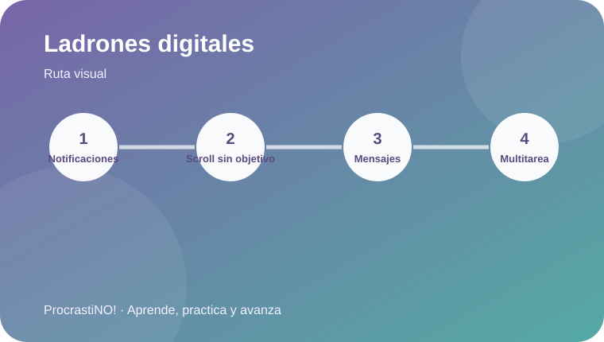

Módulo 1 · 1
Detectar los ladrones digitales
Antes de gestionar el tiempo, identifica qué estímulos fragmentan tu atención.


¿Qué puede robarte tiempo?
Un ladrón digital de tiempo es una actividad o estímulo que desvía tu atención de la tarea que elegiste: notificaciones, desplazamiento sin objetivo, revisar mensajes repetidamente o saltar entre muchas tareas.
🔔 Notificaciones
📱 Scroll
🔀 Multitarea
💬 Mensajes
Idea clave:
No se trata de eliminar la tecnología; se trata de decidir cuándo, para qué y durante cuánto tiempo usarla.
Referencias
- American Psychological Association. (2022). Procrastination: What it is, why it’s a problem, and what you can do about it. https://www.apa.org/pubs/books/procrastination